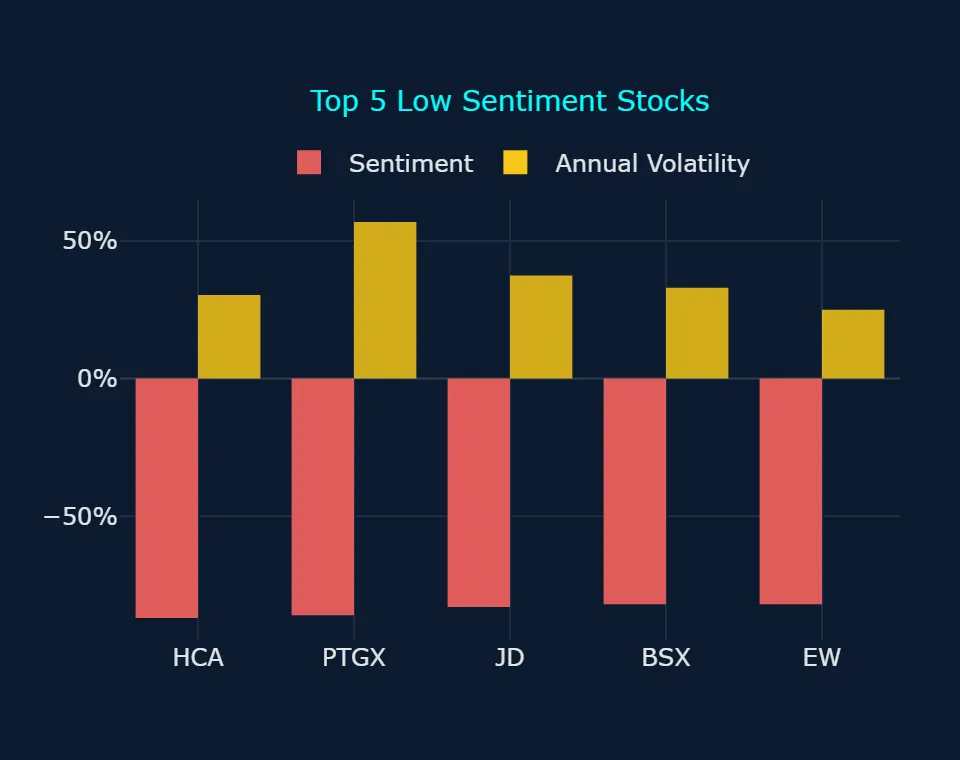
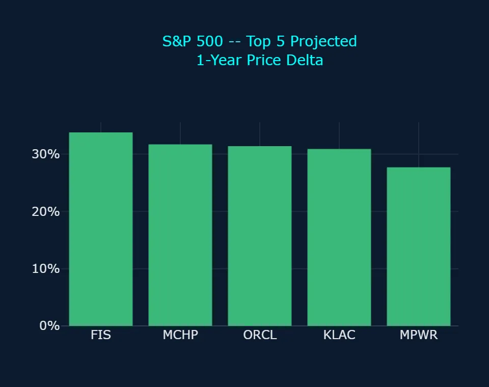
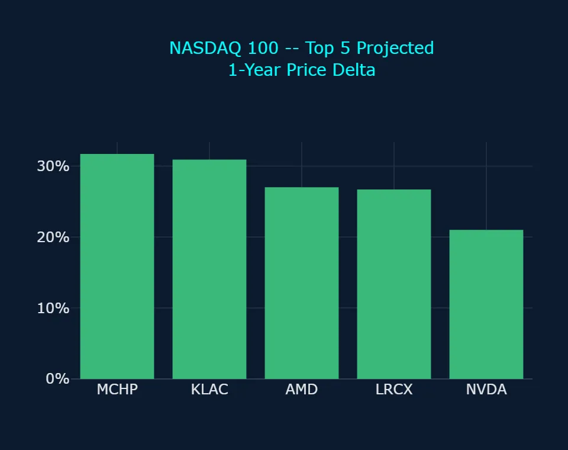
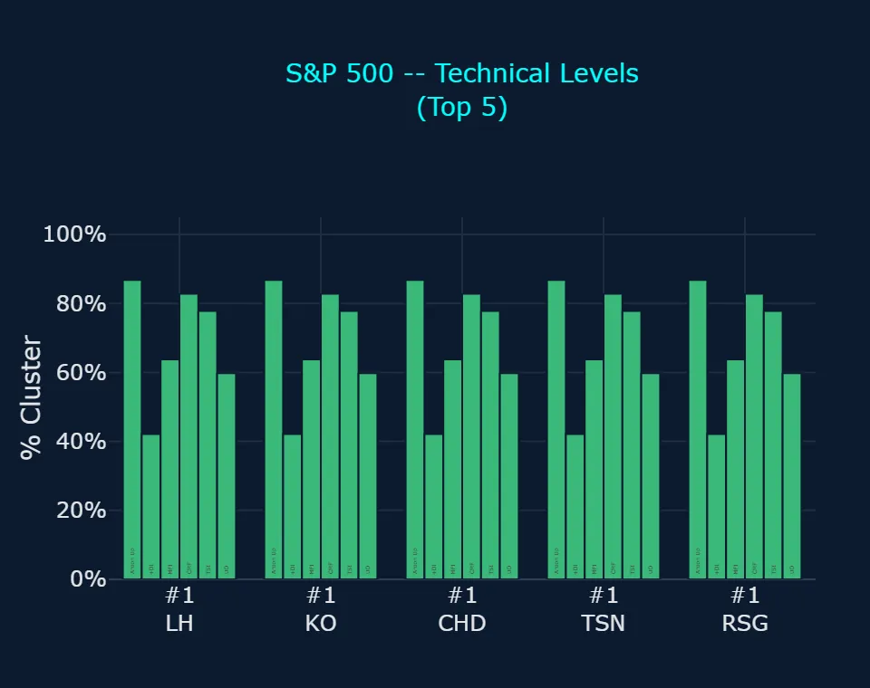
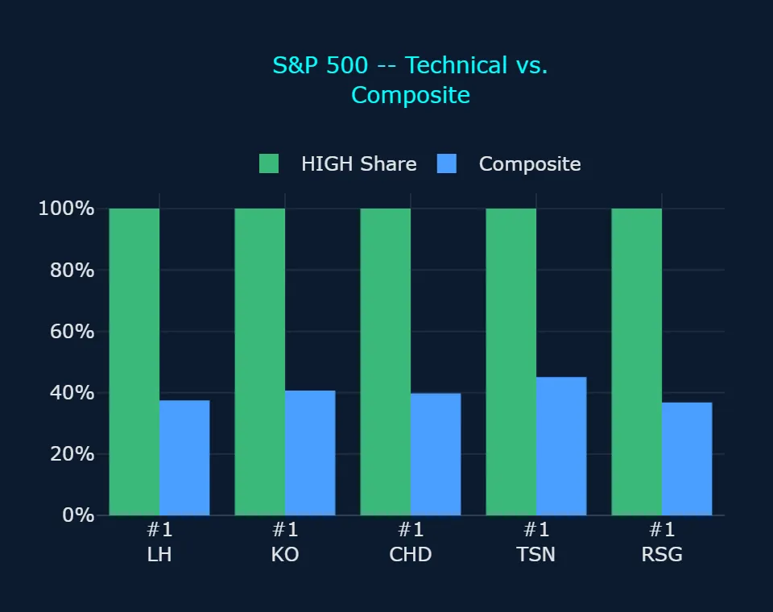

Zoonova AI: Pre-Market Quantitative Briefing – November 21, 2026
Session Quantitative Briefing: The Zoonova AI Intelligence Engine executes a hybrid architecture combining a proprietary Quad-Ensemble machine learning framework with Google Gemini Flash for real-time contextual synthesis and semantic macroeconomic grounding. The quantitative pipeline integrates four specialized estimators: Random Forest Regressor (RFR) for baseline structural stability, eXtreme Gradient Boosting (XGB) optimized for residual loss minimization, Categorical Boosting (CAT) for high-cardinality categorical signal processing, and Temporal Fusion Transformer (TFT) for multi-horizon price and volatility forecasting.
Zoonova AI: Pre-Market Momentum & Liquidity Report
1. QUANTITATIVE MODEL OVERVIEW & SIGNAL METRICS
Zoonova's predictive intelligence platform deploys a Quad-Ensemble framework integrating Random Forest Regressor [RFR], eXtreme Gradient Boosting [XGB], Categorical Boosting [CAT], and Temporal Fusion Transformer [TFT] architectures to calculate multi-horizon price targets and alpha probabilities. Market tone is evaluated via VADER sentiment scoring, while BIRCH clustering operates across the multi-asset universe to detect systemic regime shifts and trend anomalies.
- SPDR S&P 500 ETF Trust (SPY) closed at $689.81 on 2026-11-20 (Zoonova, 2026-11-20), with Quad-Ensemble projections indicating a 1-year target of $765.27 and an implied change of +10.9% alongside annualized volatility of 17.19%.
- Invesco QQQ Trust Series 1 (QQQ) closed at $608.45 on 2026-11-20 (Zoonova, 2026-11-20), carrying annualized volatility of 23.09% and a 1-year forecast of $665.94, representing a projected gain of +9.4%.
- SPDR Dow Jones Industrial Average ETF (DIA) closed at $481.08 on 2026-11-20 (Zoonova, 2026-11-20), exhibiting annualized volatility of 15.41% and an implied 1-year advance of +6.5% to $512.12.
- Vanguard Total Bond Market ETF (BND) closed at $71.33 on 2026-11-20 (Zoonova, 2026-11-20) with annualized volatility of 4.44%, while SPDR Gold Shares ETF (GLD) closed at $322.87 on 2026-11-20 (Zoonova, 2026-11-20) against a depressed sentiment reading of -51.0%.
- Cross-asset market breadth displays severe downside skew, evidenced by BIRCH clustering registering 81 names (44 stocks, 37 ETFs) under moderate severity bearish trend anomalies and 91 names (65 stocks, 26 ETFs) under low severity bearish trend anomalies, against only 2 stocks registering bullish anomalies.
2. SENTIMENT INSIGHTS – TOP 5 HIGH & LOW
Top 5 High Sentiment Stocks
| Ticker | Company Name | Sentiment Score | Primary Catalyst / Driver |
|---|---|---|---|
| CDNS | Cadence Design Systems, Inc. | +97.0% | Cadence Design Systems benefits from strong artificial intelligence engineering design adoption and resilient semiconductor research spending (Seeking Alpha, 2026-11-18). |
| DG | Dollar General Corp. | +97.0% | Dollar General is supported by steady store traffic growth, a raised annual outlook, and successful inventory turnarounds across its value-oriented retail base (Kalkine Media, 2026-11-20). |
| SNPS | Synopsys, Inc. | +97.0% | Synopsys is propelled by favorable analyst coverage initiations highlighting its electronic design automation market dominance and long-term free cash flow expansion (Investing.com, 2026-11-19). |
| EXC | Exelon Corp. | +96.0% | Exelon attracts steady defensive demand due to rate-base capital investments and growing power transmission requirements tied to data center development (Simply Wall St, 2026-11-08). |
| NRG | NRG Energy Inc. | +96.0% | NRG Energy is driven higher after reaching a definitive agreement to sell 4.9 GW of natural gas generation facilities for $4 billion to fund share repurchases and debt retirement (Utility Dive, 2026-11-16). |
Top 5 Low Sentiment Stocks
| Ticker | Company Name | Sentiment Score | Primary Friction / Risk Factor |
|---|---|---|---|
| HCA | HCA Healthcare Inc | -87.0% | HCA Healthcare faces headwinds from payer mix deterioration, commercial reimbursement friction, and balance sheet leverage following a $6.5 billion debt offering (Cleary Gottlieb, 2026-11-06). |
| PTGX | Protagonist Therapeutics Inc | -86.0% | Protagonist Therapeutics experiences pressure from recent insider share disposals and elevated execution risks surrounding partner-dependent clinical commercialization (MarketBeat, 2026-11-21). |
| JD | JD.com Inc | -83.0% | JD.com is weighed down by a third-quarter earnings miss, negative quarterly free cash flow, and integration hurdles stemming from its acquisition of CECONOMY (24/7 Wall St, 2026-11-17). |
| BSX | Boston Scientific Corp. | -82.0% | Boston Scientific suffers from market-share slippage in its electrophysiology franchise, lowered near-term guidance, and heavy debt issuance to finance its Penumbra acquisition (GuruFocus, 2026-11-20). |
| EW | Edwards Lifesciences Corp | -82.0% | Edwards Lifesciences contends with moderating valve replacement market-share gains, fourth-quarter margin compression, and intangible asset write-downs (TipRanks, 2026-11-19). |
3. ALPHA PROBABILITY & PRICE DELTA LEADERBOARD – 1-YEAR HORIZON
S&P 500 – Top 5 High Alpha Probability (1yr)
| Ticker | Prev Close 2026-11-20 ($) | 1-Yr Target Price ($) | Alpha Probability (%) | Implied Excess Alpha (%) | 10%+ Alpha? |
|---|---|---|---|---|---|
| FISV | $55.88 | $71.05 | 64.68% | 16.21% | Both Yes |
| CSGP | $29.61 | $36.12 | 59.20% | 11.06% | Both Yes |
| CPRT | $31.09 | $34.23 | 54.23% | -0.86% | Split |
| BSX | $41.98 | $46.77 | 52.38% | 0.49% | Split |
| FIS | $25.83 | $34.57 | 49.99% | 22.88% | Split |
S&P 500 – Top 5 Price Delta + % Change (1yr)
| Ticker | Prev Close 2026-11-20 ($) | 1-Yr Target Price ($) | Absolute Delta ($) | Projected 1-Yr % Change (%) | Implied Excess Alpha (%) |
|---|---|---|---|---|---|
| FIS | $25.83 | $34.57 | $8.74 | 33.84% | 22.88% |
| MCHP | $55.44 | $72.99 | $17.55 | 31.66% | 20.71% |
| ORCL | $101.19 | $132.95 | $31.76 | 31.39% | 20.45% |
| KLAC | $126.87 | $166.04 | $39.17 | 30.87% | 19.93% |
| MPWR | $1,142.05 | $1,458.90 | $316.85 | 27.74% | 16.80% |
NASDAQ 100 – Top 5 High Alpha Probability (1yr)
| Ticker | Prev Close 2026-11-20 ($) | 1-Yr Target Price ($) | Alpha Probability (%) | Implied Excess Alpha (%) | 10%+ Alpha? |
|---|---|---|---|---|---|
| CPRT | $31.09 | $34.23 | 54.23% | -0.86% | Split |
| MRNA | $195.00 | $214.50 | 33.62% | -0.94% | Both No |
| DXCM | $79.32 | $88.85 | 33.36% | 1.08% | Both No |
| KLAC | $126.87 | $166.04 | 28.79% | 19.93% | Split |
| MRVL | $122.28 | $144.98 | 28.70% | 7.62% | Both No |
NASDAQ 100 – Top 5 Price Delta + % Change (1yr)
| Ticker | Prev Close 2026-11-20 ($) | 1-Yr Target Price ($) | Absolute Delta ($) | Projected 1-Yr % Change (%) | Implied Excess Alpha (%) |
|---|---|---|---|---|---|
| MCHP | $55.44 | $72.99 | $17.55 | 31.66% | 20.71% |
| KLAC | $126.87 | $166.04 | $39.17 | 30.87% | 19.93% |
| AMD | $424.39 | $538.96 | $114.57 | 27.00% | 16.06% |
| LRCX | $183.27 | $232.26 | $48.99 | 26.73% | 15.79% |
| NVDA | $125.53 | $151.92 | $26.39 | 21.02% | 10.09% |
4. REAL-TIME CONTEXTUAL ENRICHMENT
Broad equity markets encountered severe technical consolidation heading into the 2026-11-20 close, with benchmark gauges digesting monetary policy signals following the Federal Reserve's November interest rate cut to the 4.50% to 4.75% range (Federal Reserve, 2026-11-07). Persistent underlying inflation metrics have tempered expectations for aggressive near-term easing, triggering institutional de-risking out of high-multiple growth equities and into defensive, cash-generative utilities and consumer staples. This rotation is evident in sentiment leadership from Dollar General (+97.0%) and Exelon (+96.0%), while large-cap technology and consumer platforms undergo sharp multiple compression.
Idiosyncratic operational catalysts have provided rare bright spots amidst market-wide volatility. Fiserv closed at $55.88 on 2026-11-20 (Zoonova, 2026-11-20) and ranks at the top of the S&P 500 High Alpha Probability table with a 64.70% probability of delivering 1-year alpha above 10%, where both models expect it to beat the benchmark by 10%+ alongside an implied 1-year alpha of 16.21%. This setup is supported by management doubling its Project Elevate cost-efficiency target to $1 billion and executing a $500 million share repurchase program (Zacks, 2026-11-20). Similarly, CoStar Group closed at $29.61 on 2026-11-20 (Zoonova, 2026-11-20), where both models expect it to beat the benchmark by 10%+ with a 59.20% alpha probability and a 1-year projected price of $36.12.
Correlating live macro developments with Zoonova's predictive arrays confirms an environment of heightened systemic vulnerability. BIRCH clustering identified 81 moderate severity bearish anomalies across core equity benchmarks, including SPY (ETF) and QQQ (ETF), as well as prominent enterprise tech equities. In the Tech Stock Scorecard, prominent semiconductor leaders such as NVIDIA Corp, Broadcom Inc, and Advanced Micro Devices Inc have each registered both short-term (3d) and long-term (1w) bearish trend anomalies, dragging their Technical Signal scores to 0.0. The clustering models thus confirm that broader market weakness is structural rather than transient, validating selective positioning in names with decoupled fundamental momentum rather than broad-index exposure.
5. ANOMALY DETECTION SCANNER
Direction: Bearish
Moderate Severity (81 names: 44 stocks, 37 ETFs)
- ACWI* – iShares MSCI ACWI ETF: Bearish Short-Term (3d) Trend Anomaly, Bearish Long-Term (1w) Trend Anomaly
- ADI – Analog Devices Inc.: Bearish Short-Term (3d) Trend Anomaly, Bearish Long-Term (1w) Trend Anomaly
- AMAT – Applied Materials Inc.: Bearish Short-Term (3d) Trend Anomaly, Bearish Long-Term (1w) Trend Anomaly
- AMD – Advanced Micro Devices Inc.: Bearish Short-Term (3d) Trend Anomaly, Bearish Long-Term (1w) Trend Anomaly
- AME – Ametek Inc: Bearish Short-Term (3d) Trend Anomaly, Bearish Long-Term (1w) Trend Anomaly
- ANET – Arista Networks Inc: Bearish Short-Term (3d) Trend Anomaly, Bearish Long-Term (1w) Trend Anomaly
- ARKQ* – ARK Autonomous Technology & Robotics ETF: Bearish Short-Term (3d) Trend Anomaly, Bearish Long-Term (1w) Trend Anomaly
- ASML – ASML Holding NV: Bearish Short-Term (3d) Trend Anomaly, Bearish Long-Term (1w) Trend Anomaly
- AVGO – Broadcom Inc: Bearish Short-Term (3d) Trend Anomaly, Bearish Long-Term (1w) Trend Anomaly
- C – Citigroup Inc: Bearish Short-Term (3d) Trend Anomaly, Bearish Long-Term (1w) Trend Anomaly
- CAT – Caterpillar Inc.: Bearish Short-Term (3d) Trend Anomaly, Bearish Long-Term (1w) Trend Anomaly
- DLR – Digital Realty Trust Inc: Bearish Short-Term (3d) Trend Anomaly, Bearish Long-Term (1w) Trend Anomaly
- EEM* – iShares MSCI Emerging Markets ETF: Bearish Short-Term (3d) Trend Anomaly, Bearish Long-Term (1w) Trend Anomaly
- EFA* – iShares MSCI EAFE ETF: Bearish Short-Term (3d) Trend Anomaly, Bearish Long-Term (1w) Trend Anomaly
- EMR – Emerson Electric Co.: Bearish Short-Term (3d) Trend Anomaly, Bearish Long-Term (1w) Trend Anomaly
- EQIX – Equinix Inc: Bearish Short-Term (3d) Trend Anomaly, Bearish Long-Term (1w) Trend Anomaly
- ESGU* – iShares Trust iShares ESG Aware MSCI USA ETF: Bearish Short-Term (3d) Trend Anomaly, Bearish Long-Term (1w) Trend Anomaly
- ESLT – Elbit Systems Ltd.: Bearish Short-Term (3d) Trend Anomaly, Bearish Long-Term (1w) Trend Anomaly
- GLD* – SPDR Gold Shares ETF: Bearish Short-Term (3d) Trend Anomaly, Bearish Long-Term (1w) Trend Anomaly
- GLW – Corning, Inc.: Bearish Short-Term (3d) Trend Anomaly, Bearish Long-Term (1w) Trend Anomaly
- GS – Goldman Sachs Group, Inc.: Bearish Short-Term (3d) Trend Anomaly, Bearish Long-Term (1w) Trend Anomaly
- HPE – Hewlett Packard Enterprise Co: Bearish Short-Term (3d) Trend Anomaly, Bearish Long-Term (1w) Trend Anomaly
- HWM – Howmet Aerospace Inc: Bearish Short-Term (3d) Trend Anomaly, Bearish Long-Term (1w) Trend Anomaly
- IAU* – iShares Gold Trust: Bearish Short-Term (3d) Trend Anomaly, Bearish Long-Term (1w) Trend Anomaly
- IEFA* – iShares Core MSCI EAFE ETF: Bearish Short-Term (3d) Trend Anomaly, Bearish Long-Term (1w) Trend Anomaly
- IEMG* – iShares Core MSCI Emerging Markets ETF: Bearish Short-Term (3d) Trend Anomaly, Bearish Long-Term (1w) Trend Anomaly
- INTU – Intuit Inc: Bearish Short-Term (3d) Trend Anomaly, Bearish Long-Term (1w) Trend Anomaly
- IRM – Iron Mountain Inc.: Bearish Short-Term (3d) Trend Anomaly, Bearish Long-Term (1w) Trend Anomaly
- ITOT* – iShares Core S&P Total U.S. Stock Market ETF: Bearish Short-Term (3d) Trend Anomaly, Bearish Long-Term (1w) Trend Anomaly
- IVV* – iShares Core S&P 500 ETF: Bearish Short-Term (3d) Trend Anomaly, Bearish Long-Term (1w) Trend Anomaly
- IVW* – iShares S&P 500 Growth ETF: Bearish Short-Term (3d) Trend Anomaly, Bearish Long-Term (1w) Trend Anomaly
- IWB* – iShares Russell 1000 ETF: Bearish Short-Term (3d) Trend Anomaly, Bearish Long-Term (1w) Trend Anomaly
- IWF* – iShares Russell 1000 Growth ETF: Bearish Short-Term (3d) Trend Anomaly, Bearish Long-Term (1w) Trend Anomaly
- IWP* – iShares Russell Mid-Cap Growth ETF: Bearish Short-Term (3d) Trend Anomaly, Bearish Long-Term (1w) Trend Anomaly
- IXUS* – iShares Core MSCI Total International Stock ETF: Bearish Short-Term (3d) Trend Anomaly, Bearish Long-Term (1w) Trend Anomaly
- JPM – JPMorgan Chase & Co.: Bearish Short-Term (3d) Trend Anomaly, Bearish Long-Term (1w) Trend Anomaly
- KEYS – Keysight Technologies Inc: Bearish Short-Term (3d) Trend Anomaly, Bearish Long-Term (1w) Trend Anomaly
- KLAC – KLA Corp.: Bearish Short-Term (3d) Trend Anomaly, Bearish Long-Term (1w) Trend Anomaly
- LRCX – Lam Research Corp.: Bearish Short-Term (3d) Trend Anomaly, Bearish Long-Term (1w) Trend Anomaly
- MEDP – Medpace Holdings Inc: Bearish Short-Term (3d) Trend Anomaly, Bearish Long-Term (1w) Trend Anomaly
- META – Meta Platforms Inc: Bearish Short-Term (3d) Trend Anomaly, Bearish Long-Term (1w) Trend Anomaly
- MPWR – Monolithic Power System Inc: Bearish Short-Term (3d) Trend Anomaly, Bearish Long-Term (1w) Trend Anomaly
- MRVL – Marvell Technology Inc: Bearish Short-Term (3d) Trend Anomaly, Bearish Long-Term (1w) Trend Anomaly
- MS – Morgan Stanley: Bearish Short-Term (3d) Trend Anomaly, Bearish Long-Term (1w) Trend Anomaly
- MU – Micron Technology Inc.: Bearish Short-Term (3d) Trend Anomaly, Bearish Long-Term (1w) Trend Anomaly
- NEM – Newmont Corp: Bearish Short-Term (3d) Trend Anomaly, Bearish Long-Term (1w) Trend Anomaly
- NTAP – Netapp Inc: Bearish Short-Term (3d) Trend Anomaly, Bearish Long-Term (1w) Trend Anomaly
- NVDA – NVIDIA Corp: Bearish Short-Term (3d) Trend Anomaly, Bearish Long-Term (1w) Trend Anomaly
- PH – Parker-Hannifin Corp.: Bearish Short-Term (3d) Trend Anomaly, Bearish Long-Term (1w) Trend Anomaly
- PLTR – Palantir Technologies Inc: Bearish Short-Term (3d) Trend Anomaly, Bearish Long-Term (1w) Trend Anomaly
- PRLB – Proto Labs Inc: Bearish Short-Term (3d) Trend Anomaly, Bearish Long-Term (1w) Trend Anomaly
- PWR – Quanta Services, Inc.: Bearish Short-Term (3d) Trend Anomaly, Bearish Long-Term (1w) Trend Anomaly
- QQQ* – Invesco QQQ Trust Series 1: Bearish Short-Term (3d) Trend Anomaly, Bearish Long-Term (1w) Trend Anomaly
- ROK – Rockwell Automation Inc: Bearish Short-Term (3d) Trend Anomaly, Bearish Long-Term (1w) Trend Anomaly
- SCHB* – Schwab U.S. Broad Market ETF: Bearish Short-Term (3d) Trend Anomaly, Bearish Long-Term (1w) Trend Anomaly
- SCHF* – Schwab International Equity ETF: Bearish Short-Term (3d) Trend Anomaly, Bearish Long-Term (1w) Trend Anomaly
- SCHG* – Schwab U.S. Large-Cap Growth ETF: Bearish Short-Term (3d) Trend Anomaly, Bearish Long-Term (1w) Trend Anomaly
- SCHX* – Schwab U.S. Large-Cap ETF: Bearish Short-Term (3d) Trend Anomaly, Bearish Long-Term (1w) Trend Anomaly
- SPY* – SPDR S&P 500 ETF Trust: Bearish Short-Term (3d) Trend Anomaly, Bearish Long-Term (1w) Trend Anomaly
- SPYG* – State Street SPDR Portfolio S&P 500 Growth ETF: Bearish Short-Term (3d) Trend Anomaly, Bearish Long-Term (1w) Trend Anomaly
- STT – State Street Corp.: Bearish Short-Term (3d) Trend Anomaly, Bearish Long-Term (1w) Trend Anomaly
- STX – Seagate Technology Holdings Plc: Bearish Short-Term (3d) Trend Anomaly, Bearish Long-Term (1w) Trend Anomaly
- TER – Teradyne, Inc.: Bearish Short-Term (3d) Trend Anomaly, Bearish Long-Term (1w) Trend Anomaly
- TXN – Texas Instruments Inc.: Bearish Short-Term (3d) Trend Anomaly, Bearish Long-Term (1w) Trend Anomaly
- URI – United Rentals, Inc.: Bearish Short-Term (3d) Trend Anomaly, Bearish Long-Term (1w) Trend Anomaly
- VEA* – Vanguard FTSE Developed Markets ETF: Bearish Short-Term (3d) Trend Anomaly, Bearish Long-Term (1w) Trend Anomaly
- VEU* – Vanguard FTSE All-World ex-US ETF: Bearish Short-Term (3d) Trend Anomaly, Bearish Long-Term (1w) Trend Anomaly
- VGT* – Vanguard Information Technology ETF: Bearish Short-Term (3d) Trend Anomaly, Bearish Long-Term (1w) Trend Anomaly
- VLUE* – iShares MSCI USA Value Factor ETF: Bearish Short-Term (3d) Trend Anomaly, Bearish Long-Term (1w) Trend Anomaly
- VOO* – Vanguard S&P 500 ETF: Bearish Short-Term (3d) Trend Anomaly, Bearish Long-Term (1w) Trend Anomaly
- VT* – Vanguard Total World Stock ETF: Bearish Short-Term (3d) Trend Anomaly, Bearish Long-Term (1w) Trend Anomaly
- VTI* – Vanguard Total Stock Market ETF: Bearish Short-Term (3d) Trend Anomaly, Bearish Long-Term (1w) Trend Anomaly
- VUG* – Vanguard Growth ETF: Bearish Short-Term (3d) Trend Anomaly, Bearish Long-Term (1w) Trend Anomaly
- VV* – Vanguard Large Cap ETF: Bearish Short-Term (3d) Trend Anomaly, Bearish Long-Term (1w) Trend Anomaly
- VWO* – Vanguard FTSE Emerging Markets ETF: Bearish Short-Term (3d) Trend Anomaly, Bearish Long-Term (1w) Trend Anomaly
- VXUS* – Vanguard Total International Stock ETF: Bearish Short-Term (3d) Trend Anomaly, Bearish Long-Term (1w) Trend Anomaly
- VYM* – Vanguard High Dividend Yield Indx ETF: Bearish Short-Term (3d) Trend Anomaly, Bearish Long-Term (1w) Trend Anomaly
- WAB – Westinghouse Air Brake Technologies Corp: Bearish Short-Term (3d) Trend Anomaly, Bearish Long-Term (1w) Trend Anomaly
- WDC – Western Digital Corp.: Bearish Short-Term (3d) Trend Anomaly, Bearish Long-Term (1w) Trend Anomaly
- XLI* – Industrial Select Sector SPDR: Bearish Short-Term (3d) Trend Anomaly, Bearish Long-Term (1w) Trend Anomaly
- XLK* – Technology Select Sector SPDR ETF: Bearish Short-Term (3d) Trend Anomaly, Bearish Long-Term (1w) Trend Anomaly
Low Severity (91 names: 65 stocks, 26 ETFs)
- AKAM – Akamai Technologies Inc: Bearish Short-Term (3d) Trend Anomaly
- AMGN – AMGEN Inc.: Bearish Long-Term (1w) Trend Anomaly
- APH – Amphenol Corp.: Bearish Short-Term (3d) Trend Anomaly
- ARKF* – ARK Fintech Innovation ETF: Bearish Long-Term (1w) Trend Anomaly
- ARKW* – ARK Next Generation Internet ETF: Bearish Long-Term (1w) Trend Anomaly
- BEN – Franklin Resources, Inc.: Bearish Long-Term (1w) Trend Anomaly
- BRKR – Bruker Corp: Bearish Short-Term (3d) Trend Anomaly
- CDE – Coeur Mining Inc: Bearish Long-Term (1w) Trend Anomaly
- CDNS – Cadence Design Systems, Inc.: Bearish Short-Term (3d) Trend Anomaly
- CEG – Constellation Energy Corporation: Bearish Long-Term (1w) Trend Anomaly
- CFG – Citizens Financial Group Inc: Bearish Long-Term (1w) Trend Anomaly
- CI – Cigna Group (The): Bearish Long-Term (1w) Trend Anomaly
- CRM – Salesforce Inc: Bearish Long-Term (1w) Trend Anomaly
- CRWD – Crowdstrike Holdings Inc: Bearish Short-Term (3d) Trend Anomaly
- CSCO – Cisco Systems, Inc.: Bearish Short-Term (3d) Trend Anomaly
- CVS – CVS Health Corp: Bearish Long-Term (1w) Trend Anomaly
- DE – Deere & Co.: Bearish Long-Term (1w) Trend Anomaly
- DGRO* – iShares Core Dividend Growth ETF: Bearish Long-Term (1w) Trend Anomaly
- DIA* – SPDR Dow Jones Industrial Average ETF: Bearish Long-Term (1w) Trend Anomaly
- DVY* – iShares Select Dividend ETF: Bearish Long-Term (1w) Trend Anomaly
- ETN – Eaton Corporation plc: Bearish Short-Term (3d) Trend Anomaly
- ETR – Entergy Corp.: Bearish Long-Term (1w) Trend Anomaly
- EXEL – Exelixis Inc: Bearish Long-Term (1w) Trend Anomaly
- FAST – Fastenal Co.: Bearish Short-Term (3d) Trend Anomaly
- FCX – Freeport-McMoRan Inc: Bearish Long-Term (1w) Trend Anomaly
- FFIV – F5 Inc: Bearish Short-Term (3d) Trend Anomaly
- FITB – Fifth Third Bancorp: Bearish Long-Term (1w) Trend Anomaly
- FTNT – Fortinet Inc: Bearish Short-Term (3d) Trend Anomaly
- GDX* – VanEck Gold Miners ETF: Bearish Long-Term (1w) Trend Anomaly
- GWW – W.W. Grainger Inc.: Bearish Short-Term (3d) Trend Anomaly
- HOOD – Robinhood Markets Inc: Bearish Short-Term (3d) Trend Anomaly
- HUM – Humana Inc.: Bearish Long-Term (1w) Trend Anomaly
- IDYA – Ideaya Biosciences Inc: Bearish Long-Term (1w) Trend Anomaly
- IJH* – iShares Core S&P Mid-Cap ETF: Bearish Long-Term (1w) Trend Anomaly
- INTC – Intel Corp.: Bearish Short-Term (3d) Trend Anomaly
- IVE* – iShares S&P 500 Value ETF: Bearish Long-Term (1w) Trend Anomaly
- IWD* – iShares Russell 1000 Value ETF: Bearish Long-Term (1w) Trend Anomaly
- IWR* – iShares Russell Mid-Cap ETF: Bearish Long-Term (1w) Trend Anomaly
- IWS* – iShares Russell Mid-Cap Value ETF: Bearish Long-Term (1w) Trend Anomaly
- JCI – Johnson Controls International plc: Bearish Short-Term (3d) Trend Anomaly
- MCO – Moody`s Corp.: Bearish Long-Term (1w) Trend Anomaly
- MDY* – S&P MidCap 400 ETF: Bearish Long-Term (1w) Trend Anomaly
- MPC – Marathon Petroleum Corp: Bearish Long-Term (1w) Trend Anomaly
- MRK – Merck & Co Inc: Bearish Long-Term (1w) Trend Anomaly
- NBIX – Neurocrine Biosciences, Inc.: Bearish Long-Term (1w) Trend Anomaly
- NET – Cloudflare Inc: Bearish Short-Term (3d) Trend Anomaly
- NTRA – Natera Inc: Bearish Short-Term (3d) Trend Anomaly
- NTRS – Northern Trust Corp.: Bearish Long-Term (1w) Trend Anomaly
- NVS – Novartis AG: Bearish Long-Term (1w) Trend Anomaly
- OKTA – Okta Inc: Bearish Short-Term (3d) Trend Anomaly
- OMER – Omeros Corporation: Bearish Long-Term (1w) Trend Anomaly
- PANW – Palo Alto Networks Inc: Bearish Short-Term (3d) Trend Anomaly
- PFG – Principal Financial Group Inc: Bearish Long-Term (1w) Trend Anomaly
- PKG – Packaging Corp Of America: Bearish Long-Term (1w) Trend Anomaly
- PM – Philip Morris International Inc: Bearish Long-Term (1w) Trend Anomaly
- PSX – Phillips 66: Bearish Long-Term (1w) Trend Anomaly
- QCOM – Qualcomm, Inc.: Bearish Short-Term (3d) Trend Anomaly
- ROST – Ross Stores, Inc.: Bearish Long-Term (1w) Trend Anomaly
- RSP* – Invesco S&P 500 Equal Weight ETF: Bearish Long-Term (1w) Trend Anomaly
- SCCO – Southern Copper Corporation: Bearish Long-Term (1w) Trend Anomaly
- SCHA* – Schwab U.S. Small-Cap ETF: Bearish Long-Term (1w) Trend Anomaly
- SCHD* – Schwab US Dividend Equity ETF: Bearish Long-Term (1w) Trend Anomaly
- SDGR – Schrodinger Inc: Bearish Short-Term (3d) Trend Anomaly
- SHOP – Shopify Inc: Bearish Long-Term (1w) Trend Anomaly
- SNPS – Synopsys, Inc.: Bearish Short-Term (3d) Trend Anomaly
- SWKS – Skyworks Solutions, Inc.: Bearish Long-Term (1w) Trend Anomaly
- TDY – Teledyne Technologies Inc: Bearish Short-Term (3d) Trend Anomaly
- TEL – TE Connectivity plc: Bearish Short-Term (3d) Trend Anomaly
- TPR – Tapestry Inc: Bearish Long-Term (1w) Trend Anomaly
- TWLO – Twilio Inc: Bearish Long-Term (1w) Trend Anomaly
- TWST – Twist Bioscience Corp: Bearish Short-Term (3d) Trend Anomaly
- TXG – 10x Genomics Inc: Bearish Short-Term (3d) Trend Anomaly
- UNH – Unitedhealth Group Inc: Bearish Long-Term (1w) Trend Anomaly
- URGN – UroGen Pharma Ltd: Bearish Short-Term (3d) Trend Anomaly
- USB – U.S. Bancorp.: Bearish Long-Term (1w) Trend Anomaly
- USMV* – iShares MSCI USA Min Vol Factor ETF: Bearish Long-Term (1w) Trend Anomaly
- UTHR – United Therapeutics Corp: Bearish Long-Term (1w) Trend Anomaly
- VBK* – Vanguard Small Cap Growth ETF: Bearish Long-Term (1w) Trend Anomaly
- VEEV – Veeva Systems Inc: Bearish Long-Term (1w) Trend Anomaly
- VGK* – Vanguard FTSE Europe ETF: Bearish Long-Term (1w) Trend Anomaly
- VGZ – Vista Gold Corp.: Bearish Long-Term (1w) Trend Anomaly
- VHT* – Vanguard Health Care ETF: Bearish Long-Term (1w) Trend Anomaly
- VIG* – Vanguard Dividend Appreciation FTF: Bearish Long-Term (1w) Trend Anomaly
- VLO – Valero Energy Corp.: Bearish Long-Term (1w) Trend Anomaly
- VO* – Vanguard Mid-Cap ETF: Bearish Long-Term (1w) Trend Anomaly
- VOE* – Vanguard Mid-Cap Value ETF: Bearish Long-Term (1w) Trend Anomaly
- VTV* – Vanguard Value ETF: Bearish Long-Term (1w) Trend Anomaly
- VXF* – Vanguard Extended Market Index ETF: Bearish Long-Term (1w) Trend Anomaly
- XLC* – Communication Services Select Sector SPDR Fund: Bearish Long-Term (1w) Trend Anomaly
- XLF* – Financial Select Sector SPDR: Bearish Long-Term (1w) Trend Anomaly
- ZM – Zoom Communications Inc.: Bearish Long-Term (1w) Trend Anomaly
Direction: Bullish
Low Severity (2 stocks)
- GPN – Global Payments, Inc.: Bullish Short-Term (3d) Trend Anomaly
- INSM – Insmed Inc: Bullish Long-Term (1w) Trend Anomaly
* ETF (exchange-traded fund)
6. STRATEGIC INVESTMENT ASSESSMENT
- Maintain a guarded, defensively tilted macro allocation as BIRCH clustering registers 81 moderate severity bearish trend anomalies across prominent equities and 37 ETFs, including SPY (ETF), QQQ (ETF), and Industrial Select Sector SPDR (XLI).
- Overweight high-conviction fintech restructuring opportunities highlighted on the Main Scorecard, led by Fiserv (Composite 68.6, Alpha Rating 76.0, Macro Alignment 90.3) and CoStar Group (Composite 57.7, Alpha Rating 69.5), where both models expect each to beat the benchmark by 10%+ over a 1-year horizon.
- Curtail exposure to mega-cap semiconductor and hardware leaders within the Tech Stock Scorecard, where NVIDIA Corp (Composite 38.7), Advanced Micro Devices Inc (Composite 32.1), and Broadcom Inc (Composite 26.4) have seen Technical Signal ratings drop to 0.0 following dual bearish trend anomaly registrations.
- Allocate selectively to capital-reallocation and grid-infrastructure beneficiaries such as NRG Energy (Sentiment Rating 98.0, Composite 62.3) and Exelon Corp (annualized volatility of 19.42%), where structural power demand and accretive asset divestitures provide non-correlated support against broader market drawdowns.
7. STOCK SCORECARD
Main Scorecard
| Ticker | Composite (%) | Alpha Rating | 10%+ Alpha? | Projected 1-Yr Change (%) | Street Consensus (Upside) | Next Earnings | Sentiment Rating | Technical Signal | Macro Alignment | Anomaly Flag | Catalyst / Risk | Market Cap | EPS Revisions (30d) | Short Interest / DTC | Options Flow | Earnings Surprise (4Q) | Bias |
|---|---|---|---|---|---|---|---|---|---|---|---|---|---|---|---|---|---|
| FIS | 68.6% | 58.7 | Split | +33.8% | Hold (+31.6%) | 2027-02-11 | 80.5 | 50.0 | 91.7 | None | Bank Conversion Delays | $15.2B | Downward (-9.1%) | 3.1% / 2.4 DTC | Neutral / Mixed | 3/4 Beats | Bullish |
| FISV | 65.9% | 76.0 | Both Yes | +27.1% | Hold (+16.1%) | 2027-02-08 | 50.0 | 50.0 | 90.3 | None | Elevate Cost Discipline | $30.1B | Neutral/Flat (0.0%) | 2.3% / 1.9 DTC | Neutral / Mixed | 3/4 Beats | Bullish |
| NRG | 62.3% | 31.4 | Both No | +18.9% | Buy (+69.7%) | 2027-02-18 | 98.0 | 50.0 | 79.2 | None | Retail Synergies Expansion | $18.4B | Downward (-4.2%) | 3.9% / 2.5 DTC | Bullish (Call Skew) | 3/4 Beats | Neutral |
| CSGP | 57.7% | 69.5 | Both Yes | +22.0% | Buy (+18.6%) | 2027-02-23 | 28.0 | 50.0 | 86.6 | None | Residential Spending Restructuring | $13.8B | Downward (-8.5%) | 6.2% / 4.1 DTC | Neutral / Mixed | 3/4 Beats | Bearish |
| APH | 57.0% | 46.5 | Both No | +15.9% | Buy (+53.5%) | 2027-01-27 | 90.0 | 25.0 | 71.5 | Bearish (3d) | Datacom Demand Surge | $186.9B | Upward (+14.5%) | 1.8% / 1.4 DTC | Neutral / Mixed | 4/4 Beats (+5.4% avg) | Neutral |
| DG | 56.3% | 22.8 | Both No | +13.1% | Buy (+8.5%) | 2026-12-03 (in 12d) | 98.5 | 50.0 | 61.5 | None | Margin Recovery Momentum | $28.8B | Upward (+5.9%) | 4.8% / 3.2 DTC | Bullish (Call Skew) | 4/4 Beats (+6.1% avg) | Neutral |
| INSM | 54.6% | 25.8 | Both No | +19.1% | Buy (+37.3%) | 2027-02-18 | 48.5 | 75.0 | 80.1 | Bullish (1w) | Takeover Speculation Premium | $31.0B | Upward (+12.3%) | 5.1% / 2.8 DTC | Bullish (Call Skew) | 3/4 Beats | Neutral |
| DXCM | 53.1% | 39.2 | Both No | +12.0% | Strong Buy (+25.3%) | 2027-02-11 | 70.0 | 50.0 | 56.5 | None | Sensor Rollout Momentum | $29.9B | Upward (+4.2%) | 4.5% / 2.7 DTC | Bullish (Call Skew) | 4/4 Beats (+6.5% avg) | Neutral |
| ORCL | 53.0% | 32.6 | Split | +31.4% | Strong Buy (+141.2%) | 2026-12-09 (in 18d) | 50.0 | 50.0 | 91.0 | None | Cloud Backlog Monetization | $305.9B | Downward (-3.8%) | 2.6% / 2.1 DTC | Bearish (Put Heavy) | 3/4 Beats | Neutral |
| CPRT | 52.6% | 63.7 | Split | +10.1% | Buy (+25.4%) | 2026-12-01 (in 10d) | 50.0 | 50.0 | 42.2 | None | Salvage Auction Resilience | $29.6B | Neutral/Flat (0.0%) | 2.8% / 3.4 DTC | Neutral / Mixed | 3/4 Beats | Neutral |
| FFIV | 50.7% | 34.4 | Both No | +14.7% | Hold (+45.7%) | 2027-01-25 | 82.5 | 25.0 | 67.3 | Bearish (3d) | Cloud Security Refresh | $26.0B | Upward (+3.5%) | 3.7% / 2.9 DTC | Neutral / Mixed | 4/4 Beats (+4.8% avg) | Neutral |
| KLAC | 49.2% | 33.8 | Split | +30.9% | Buy (+73.7%) | 2027-01-28 | 83.5 | 0.0 | 90.7 | Bearish (3d/1w) | Semiconductor Yield Intensity | $188.8B | Upward (+6.7%) | 2.1% / 1.8 DTC | Bearish (Put Heavy) | 4/4 Beats (+5.2% avg) | Neutral |
| CDE | 48.8% | 48.8 | Both No | +18.4% | Buy (+119.7%) | 2027-02-17 | 50.0 | 25.0 | 77.2 | Bearish (1w) | Precious Metals Volatility | $10.9B | Downward (-7.4%) | 5.9% / 3.5 DTC | Bearish (Put Heavy) | 3/4 Beats | Neutral |
| MPWR | 47.2% | 26.7 | Split | +27.7% | Strong Buy (+56.2%) | 2027-02-04 | 84.5 | 0.0 | 90.5 | Bearish (3d/1w) | Enterprise Power Acceleration | $66.8B | Upward (+8.2%) | 3.5% / 2.2 DTC | Bullish (Call Skew) | 4/4 Beats (+5.1% avg) | Neutral |
| MRVL | 46.4% | 33.7 | Both No | +18.6% | Buy (+143.2%) | 2026-12-01 (in 10d) | 82.5 | 0.0 | 78.2 | Bearish (3d/1w) | Custom Silicon Demand | $107.2B | Downward (-14.2%) | 3.8% / 2.1 DTC | Bearish (Put Heavy) | 4/4 Beats (+4.1% avg) | Neutral |
| MRNA | 45.5% | 39.5 | Both No | +10.0% | Hold (-29.3%) | 2027-02-19 | 51.5 | 50.0 | 41.6 | None | Cancer Vaccine Pipeline | $79.0B | Upward (+18.4%) | 7.4% / 3.9 DTC | Bearish (Put Heavy) | 2/4 Beats | Neutral |
| IDYA | 44.7% | 18.8 | Both No | +15.3% | Strong Buy (+94.6%) | 2027-03-02 | 75.5 | 25.0 | 69.6 | Bearish (1w) | Regulatory Filing Review | $2.9B | Neutral/Flat (0.0%) | 8.2% / 5.1 DTC | Neutral / Mixed | 2/4 Beats | Neutral |
| BSX | 43.9% | 61.5 | Split | +11.4% | Buy (+19.2%) | 2027-01-28 | 9.0 | 50.0 | 53.3 | None | Penumbra Acquisition Debt | $60.9B | Downward (-6.8%) | 1.9% / 1.7 DTC | Neutral / Mixed | 3/4 Beats | Bearish |
| INTU | 42.6% | 20.2 | Both No | +14.2% | Buy (+45.2%) | 2027-02-19 | 93.5 | 0.0 | 65.8 | Bearish (3d/1w) | Guidance Reset Caution | $72.3B | Downward (-11.2%) | 2.4% / 1.8 DTC | Bearish (Put Heavy) | 4/4 Beats (+7.8% avg) | Neutral |
| JD | 37.2% | 27.2 | Both No | +16.1% | Buy (+45.4%) | 2027-03-04 | 8.5 | 50.0 | 72.2 | None | Retail Subsidies Pressure | $34.1B | Downward (-5.4%) | 2.1% / 1.6 DTC | Neutral / Mixed | 3/4 Beats | Bearish |
10%+ Alpha? – whether Zoonova's two 1-year models (alpha probability and price target) expect the stock to beat the benchmark by 10%+. “Both No” is common: 10% is a high bar.
Tech Stock Scorecard
| Ticker | Composite (%) | Alpha Rating | 10%+ Alpha? | Projected 1-Yr Change (%) | Street Consensus (Upside) | Next Earnings | Sentiment Rating | Technical Signal | Macro Alignment | Anomaly Flag | Catalyst / Risk | Market Cap | EPS Revisions (30d) | Short Interest / DTC | Options Flow | Earnings Surprise (4Q) | Bias |
|---|---|---|---|---|---|---|---|---|---|---|---|---|---|---|---|---|---|
| TSLA | 40.1% | 6.1 | Both No | +13.4% | Buy (+17.8%) | 2027-01-27 | 52.5 | 50.0 | 63.5 | None | Autonomous Robotaxi Scaling | $1.37T | Downward (-3.2%) | 3.6% / 2.1 DTC | Bearish (Put Heavy) | 2/4 Beats | Neutral |
| NVDA | 38.7% | 16.5 | Split | +21.0% | Buy (+96.8%) | 2027-02-24 | 67.0 | 0.0 | 85.0 | Bearish (3d/1w) | Executive Leadership Transition | $3.09T | Downward (-8.6%) | 1.3% / 1.2 DTC | Bearish (Put Heavy) | 4/4 Beats (+6.9% avg) | Bearish |
| INTC | 37.6% | 7.3 | Both No | +20.2% | Hold (+77.3%) | 2027-01-20 | 50.0 | 25.0 | 83.0 | Bearish (3d) | Foundry Execution Turnaround | $273.0B | Downward (-15.4%) | 4.2% / 2.3 DTC | Bearish (Put Heavy) | 2/4 Beats | Bearish |
| AAPL | 36.6% | 5.5 | Both No | +6.5% | Hold (+1.3%) | 2027-01-27 | 87.0 | 50.0 | 3.7 | None | Hardware Margin Compression | $4.98T | Downward (-4.1%) | 1.1% / 1.5 DTC | Neutral / Mixed | 4/4 Beats (+4.3% avg) | Bearish |
| MSFT | 34.5% | 4.6 | Both No | +6.4% | Strong Buy (+31.3%) | 2027-01-26 | 80.0 | 50.0 | 3.3 | None | Cloud Infrastructure Capex | $3.60T | Upward (+3.8%) | 0.9% / 1.3 DTC | Neutral / Mixed | 4/4 Beats (+8.2% avg) | Bearish |
| AMD | 32.1% | 5.2 | Split | +27.0% | Buy (+50.8%) | 2027-02-01 | 50.0 | 0.0 | 90.1 | Bearish (3d/1w) | Data Center Demand | $825.6B | Downward (-8.9%) | 2.5% / 1.8 DTC | Bearish (Put Heavy) | 4/4 Beats (+5.5% avg) | Bearish |
| GOOGL | 29.8% | 5.2 | Both No | +8.1% | Buy (+43.2%) | 2027-02-02 | 50.0 | 50.0 | 16.3 | None | Capital Expenditure Discipline | $3.23T | Downward (-5.0%) | 1.4% / 1.6 DTC | Neutral / Mixed | 4/4 Beats (+7.1% avg) | Bearish |
| AMZN | 29.4% | 2.3 | Both No | +8.5% | Strong Buy (+32.3%) | 2027-02-03 | 50.0 | 50.0 | 18.6 | None | Cloud Acceleration Spending | $2.60T | Upward (+5.2%) | 1.2% / 1.4 DTC | Bullish (Call Skew) | 4/4 Beats (+12.4% avg) | Bearish |
| META | 28.6% | 2.8 | Both No | +9.3% | Buy (+51.2%) | 2027-01-27 | 87.0 | 0.0 | 29.9 | Bearish (3d/1w) | Frontier Model Monetization | $1.60T | Downward (-6.4%) | 1.5% / 1.7 DTC | Bearish (Put Heavy) | 3/4 Beats | Bearish |
| AVGO | 26.4% | 4.6 | Both No | +13.2% | Strong Buy (+72.0%) | 2026-12-09 (in 18d) | 50.0 | 0.0 | 62.6 | Bearish (3d/1w) | Hyperscaler Custom Silicon | $1.45T | Downward (-7.3%) | 1.8% / 1.5 DTC | Bearish (Put Heavy) | 4/4 Beats (+4.6% avg) | Bearish |
| SPCX | N/H | N/H | N/A | N/A | Buy | 2027-02-09 | N/H | N/H | N/H | None | Starship Reusability Expansion | $1.74T | Upward (+14.2%) | 7.9% / 1.5 DTC | Bearish (Put Heavy) | 3/4 Beats | N/A |
N/H: no ML scores yet (insufficient trading history for the models).
Search-grounded columns (Street Consensus (Upside), Next Earnings, Catalyst / Risk, Market Cap, EPS Revisions (30d), Short Interest / DTC, Options Flow, Earnings Surprise (4Q)): MarketBeat (sources dated 2026-11-20 to 2026-11-21).






Educational purposes only. Not investment advice.
Zoonova AI: Pre-Market Technical Analysis Report
Defensive and staples names dominate technical ranks with strong HIGH clusters, yet low composites signal widespread divergence.
1. 6 CORE INDICATORS
Indicator levels (LOW / MEDIUM / HIGH) and % Cluster come from Zoonova's BIRCH model (Balanced Iterative Reducing and Clustering using Hierarchies), an unsupervised machine-learning clustering model used for pattern recognition. Each indicator is clustered across the stock universe; % Cluster is the centroid of the cluster a stock falls in.
| Indicator | Category | Role |
|---|---|---|
| ARUPAroon Up | Trend Direction | Recency of the highest high in the lookback window; collapses in bear markets, so HIGH means price keeps printing fresh swing highs. |
| +DIPositive Directional Indicator | Trend Direction | Upward directional movement relative to true range; unlike ADX it collapses in sell-offs, so HIGH confirms buyer-driven expansion. |
| MFIMoney Flow Index | Volume / Inflow | Volume-weighted RSI from 0 to 100; falls as money leaves on down days, so HIGH means inflow on up days outweighs outflow. |
| CMFChaikin Money Flow | Volume / Inflow | Close location within the bar weighted by volume; plunges negative in liquidation, so HIGH confirms sustained buying into the top of daily ranges. |
| TSITrue Strength Index | Momentum | Double-smoothed momentum from -100 to +100; deeply negative in downtrends, so HIGH shows consistent multi-period upward thrust. |
| UOUltimate Oscillator | Momentum | Buying pressure across 7-, 14- and 28-period windows from 0 to 100; sinks when closes sit near the lows, so HIGH means buyers are in control on every timeframe. |
2. TECHNICAL REGIME
| Index | Universe | All HIGH (6/6) | Avg HIGH | Aroon Up HIGH | +DI HIGH | MFI HIGH | CMF HIGH | TSI HIGH | UO HIGH |
|---|---|---|---|---|---|---|---|---|---|
| S&P 500 | 424 | 24 | 1.7/6 | 56 | 152 | 169 | 125 | 118 | 114 |
| NASDAQ 100 | 71 | 1 | 1.3/6 | 6 | 24 | 22 | 13 | 15 | 11 |
Across the S&P 500, 24 stocks had all indicators HIGH with an average HIGH count of 1.7 out of 424 constituents, led by Money Flow Index with 169 members at HIGH. In contrast, the NASDAQ 100 saw only 1 stock with all indicators HIGH and an average HIGH count of 1.3 across 71 members, reflecting weaker broad-based participation.
3. TOP 5 BULLISH CONFLUENCE
Ranking: Rank = HIGH count (#1 = 6/6, #2 = 5/6, ...); within a rank, Sentiment (desc), then ticker. Sentiment only orders tickers within a rank; it is not a technical signal.
S&P 500 – Top 5 Bullish Confluence
| Rank | Ticker | Aroon Up | +DI | MFI | CMF | TSI | UO | HIGH | Sentiment |
|---|---|---|---|---|---|---|---|---|---|
| 1 | LH | HIGH 86.8% | HIGH 42.1% | HIGH 63.8% | HIGH 82.8% | HIGH 77.8% | HIGH 59.8% | 6/6 | +94.0% |
| 1 | KO | HIGH 86.8% | HIGH 42.1% | HIGH 63.8% | HIGH 82.8% | HIGH 77.8% | HIGH 59.8% | 6/6 | +93.0% |
| 1 | CHD | HIGH 86.8% | HIGH 42.1% | HIGH 63.8% | HIGH 82.8% | HIGH 77.8% | HIGH 59.8% | 6/6 | +89.0% |
| 1 | TSN | HIGH 86.8% | HIGH 42.1% | HIGH 63.8% | HIGH 82.8% | HIGH 77.8% | HIGH 59.8% | 6/6 | +81.0% |
| 1 | RSG | HIGH 86.8% | HIGH 42.1% | HIGH 63.8% | HIGH 82.8% | HIGH 77.8% | HIGH 59.8% | 6/6 | +79.0% |
S&P 500 – Signal Groups
| Rank | Ticker | Trend Direction | Volume / Inflow | Momentum |
|---|---|---|---|---|
| 1 | LH | 2 of 2 HIGH | 2 of 2 HIGH | 2 of 2 HIGH |
| 1 | KO | 2 of 2 HIGH | 2 of 2 HIGH | 2 of 2 HIGH |
| 1 | CHD | 2 of 2 HIGH | 2 of 2 HIGH | 2 of 2 HIGH |
| 1 | TSN | 2 of 2 HIGH | 2 of 2 HIGH | 2 of 2 HIGH |
| 1 | RSG | 2 of 2 HIGH | 2 of 2 HIGH | 2 of 2 HIGH |
NASDAQ 100 – Top 5 Bullish Confluence
| Rank | Ticker | Aroon Up | +DI | MFI | CMF | TSI | UO | HIGH | Sentiment |
|---|---|---|---|---|---|---|---|---|---|
| 1 | CMCSA | HIGH 86.8% | HIGH 42.1% | HIGH 63.8% | HIGH 82.8% | HIGH 77.8% | HIGH 59.8% | 6/6 | 0.0% |
| 2 | EXC | MEDIUM 53.4% | HIGH 42.1% | HIGH 63.8% | HIGH 82.8% | HIGH 77.8% | HIGH 59.8% | 5/6 | +96.0% |
| 2 | COST | HIGH 86.8% | HIGH 42.1% | HIGH 63.8% | MEDIUM 70.4% | HIGH 77.8% | HIGH 59.8% | 5/6 | 0.0% |
| 2 | PEP | HIGH 86.8% | HIGH 42.1% | HIGH 63.8% | MEDIUM 70.4% | HIGH 77.8% | HIGH 59.8% | 5/6 | -5.0% |
| 2 | ORLY | HIGH 86.8% | HIGH 42.1% | HIGH 63.8% | MEDIUM 70.4% | HIGH 77.8% | HIGH 59.8% | 5/6 | -8.0% |
NASDAQ 100 – Signal Groups
| Rank | Ticker | Trend Direction | Volume / Inflow | Momentum |
|---|---|---|---|---|
| 1 | CMCSA | 2 of 2 HIGH | 2 of 2 HIGH | 2 of 2 HIGH |
| 2 | EXC | 1 of 2 HIGH | 2 of 2 HIGH | 2 of 2 HIGH |
| 2 | COST | 2 of 2 HIGH | 1 of 2 HIGH | 2 of 2 HIGH |
| 2 | PEP | 2 of 2 HIGH | 1 of 2 HIGH | 2 of 2 HIGH |
| 2 | ORLY | 2 of 2 HIGH | 1 of 2 HIGH | 2 of 2 HIGH |
4. TICKER READS
S&P 500
- #1 LH – 6 of 6 HIGH, showing full technical alignment across Trend Direction, Volume / Inflow, and Momentum. Aroon Up and +DI confirm steady upward trend structure, while MFI and CMF reflect top-tier accumulation alongside TSI and UO thrust. The Divergent verdict stems from a Composite of 37.5, which is held back by low Macro Alignment. Watch: Aroon Up or CMF dropping below the HIGH cluster.
- #1 KO – 6 of 6 HIGH, demonstrating strong upward expansion with both Aroon Up and +DI in the top cluster. Sustained institutional buying is supported by HIGH readings in MFI and CMF, while TSI and UO confirm multi-period momentum. A Divergent verdict reflects the gap between these top-tier technicals and a Composite of 40.7. Watch: MFI or CMF slipping from HIGH into MEDIUM.
- #1 CHD – 6 of 6 HIGH, featuring unanimous strength across Trend Direction, Volume / Inflow, and Momentum. Aroon Up and +DI confirm upward directional continuity, while MFI, CMF, TSI, and UO confirm robust capital inflows and multi-period thrust. The setup carries a Divergent verdict due to a Composite of 39.8. Watch: +DI or Aroon Up retreating from the HIGH cluster.
- #1 TSN – 6 of 6 HIGH, backed by synchronized strength across all three signal groups. Aroon Up and +DI confirm sustained upward price movement, paired with strong accumulation via MFI and CMF and persistent thrust in TSI and UO. The setup receives a Mixed verdict as its Composite of 45.1 sits near the neutral boundary. Watch: CMF or MFI falling from HIGH to MEDIUM.
- #1 RSG – 6 of 6 HIGH, driven by clean alignment across Trend Direction, Volume / Inflow, and Momentum. Both Aroon Up and +DI occupy the HIGH cluster to confirm directional expansion, reinforced by strong buying pressure in MFI, CMF, TSI, and UO. Despite the complete indicator sweep, the verdict is Divergent due to a Composite of 36.8. Watch: TSI or UO momentum slipping from the HIGH cluster.
NASDAQ 100
- #1 CMCSA – 6 of 6 HIGH, capturing unanimous participation across Trend Direction, Volume / Inflow, and Momentum. Upward expansion is validated by Aroon Up and +DI, while institutional accumulation and multi-period momentum remain firmly established in MFI, CMF, TSI, and UO. A Divergent verdict highlights the contrast between perfect indicator levels and a Composite of 38.8. Watch: Aroon Up slipping from HIGH or CMF weakening.
- #2 EXC – 5 of 6 HIGH, with Trend Direction showing 1 of 2 HIGH as Aroon Up sits at MEDIUM while +DI remains HIGH. Volume / Inflow and Momentum provide full backing with MFI, CMF, TSI, and UO all holding in the top cluster. The verdict is Divergent as the strong indicator profile contrasts with a Composite of 43.1. Watch: Aroon Up failing to reach HIGH or +DI weakening.
- #2 COST – 5 of 6 HIGH, with Trend Direction and Momentum fully confirmed by Aroon Up, +DI, TSI, and UO in the top cluster. Volume / Inflow is 1 of 2 HIGH as CMF remains at MEDIUM despite strong MFI inflow. The stock carries a Divergent verdict because its strong technical footprint conflicts with a Composite of 31.0. Watch: CMF failing to reach HIGH or MFI dropping.
- #2 PEP – 5 of 6 HIGH, supported by dual HIGH readings in Trend Direction via Aroon Up and +DI alongside HIGH TSI and UO momentum. Volume / Inflow is partially restrained with CMF at MEDIUM while MFI holds HIGH. The setup is Divergent given the stark disparity between 5 of 6 HIGH technicals and a Composite of 29.3. Watch: CMF declining further or Aroon Up losing HIGH.
- #2 ORLY – 5 of 6 HIGH, exhibiting strong upward movement with Aroon Up and +DI in the top cluster alongside HIGH TSI and UO momentum. Volume / Inflow remains split with MFI at HIGH but CMF at MEDIUM, indicating incomplete closing-range volume conviction. A Divergent verdict reflects the gap between these technicals and a Composite of 29.6. Watch: MFI slipping from HIGH or +DI losing HIGH status.
5. TECHNICAL VS. COMPOSITE MODEL CHECK
Composite is the Zoonova Scorecard (0-100), normalized across the full universe: 30% Alpha (1-year probability of beating the benchmark by 10%+), 25% Sentiment, 25% Technical (bullish minus bearish anomaly flags; 50 = none) and 20% Macro (1-year alpha percentile).
Verdict: Confirmed = strong technicals (HIGH share 75% or more) with Composite 55 or more; Divergent = one strong and the other weak (strong technicals with Composite below 45, or weak technicals, HIGH share below 50%, with Composite 55 or more); Weak = both weak; otherwise Mixed.
S&P 500 – Technical vs. Composite
| Rank | Ticker | HIGH | Composite | Verdict |
|---|---|---|---|---|
| 1 | LH | 6/6 | 37.5% | Divergent |
| 1 | KO | 6/6 | 40.7% | Divergent |
| 1 | CHD | 6/6 | 39.8% | Divergent |
| 1 | TSN | 6/6 | 45.1% | Mixed |
| 1 | RSG | 6/6 | 36.8% | Divergent |
NASDAQ 100 – Technical vs. Composite
| Rank | Ticker | HIGH | Composite | Verdict |
|---|---|---|---|---|
| 1 | CMCSA | 6/6 | 38.8% | Divergent |
| 2 | EXC | 5/6 | 43.1% | Divergent |
| 2 | COST | 5/6 | 31.0% | Divergent |
| 2 | PEP | 5/6 | 29.3% | Divergent |
| 2 | ORLY | 5/6 | 29.6% | Divergent |
- LH: Labcorp pairs a unanimous 6 of 6 HIGH indicator profile with a Divergent Composite of 37.5, dragged down by a Macro Alignment of 1.2.
- KO: Coca-Cola exhibits 6 of 6 HIGH technical indicators, yet its Composite stands at 40.7 due to low Alpha Rating of 1.4 and Macro Alignment of 18.1.
- CHD: Church & Dwight prints 6 of 6 HIGH indicators alongside a Divergent Composite of 39.8, constrained by an Alpha Rating of 1.2 and Macro Alignment of 16.7.
- RSG: Republic Services shows 6 of 6 HIGH technical indicators against a Composite of 36.8, weighed down by an Alpha Rating of 0.8 and Macro Alignment of 8.7.
- CMCSA: Comcast displays 6 of 6 HIGH indicators across all categories, yet records a Divergent Composite of 38.8 despite a neutral Technical Signal of 50.0.
- EXC: Exelon posts 5 of 6 HIGH indicators, but registers a Composite of 43.1 as a Macro Alignment of 20.4 limits the Scorecard.
- COST: Costco carries 5 of 6 HIGH technical indicators against a Divergent Composite of 31.0, suppressed by an Alpha Rating of 1.1.
- PEP: PepsiCo holds 5 of 6 HIGH indicators while its Composite languishes at 29.3, impaired by an Alpha Rating of 2.3 and Macro Alignment of 21.2.
- ORLY: O'Reilly Automotive maintains 5 of 6 HIGH indicators, contrasting with a Composite of 29.6 and a Sentiment Rating of 46.0.
6. TECHNICAL CONTEXT
- TSN – Tyson Foods reported fourth-quarter fiscal 2026 revenue of $14.59 billion and adjusted EPS of $0.61 on 2026-11-16, beating analyst expectations. (MarketBeat, 2026-11-16)
- XLC – Communication Services Select Sector SPDR Fund registered a bearish long-term trend anomaly on 2026-11-20, indicating sector-level headwind despite Comcast displaying 6 of 6 HIGH technical indicators. (Zoonova, 2026-11-20)
- ROST – Ross Stores registered a bearish long-term trend anomaly on 2026-11-20, reflecting selective retail headwinds as Costco and O'Reilly Automotive maintain 5 of 6 HIGH indicators. (Zoonova, 2026-11-20)
- QQQ – Invesco QQQ Trust Series 1 registered moderate bearish short-term and long-term trend anomalies on 2026-11-20, underscoring broader pressure across large-cap growth. (Zoonova, 2026-11-20)
7. TECHNICAL ASSESSMENT
Technical leadership is concentrated in defensive, staples, and utility names, while broader markets face heavy selling pressure highlighted by 81 moderate and 91 low severity bearish anomalies against just 2 bullish anomalies. Nine of the ten ranked leaders carry Divergent verdicts as subdued composite scores fail to validate indicator strength. The primary risk is that market-wide liquidation forces defensive leaders to break their HIGH indicator clusters and succumb to macro weakness.




Educational purposes only. Not investment advice.